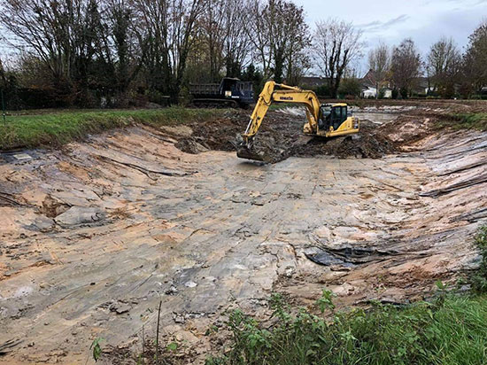

Curage d'étang
Le curage consiste à extraire la vase, les sédiments et les matières organiques accumulés au fond de votre étang. Sans entretien régulier, un plan d'eau peut perdre jusqu'à 50 % de sa profondeur en 20 ans.
Nous intervenons avec des engins adaptés (pelles amphibies, pompes à vase, dragues aspirantes) en fonction de la superficie, de la profondeur et des conditions d'accès de votre site.
- Diagnostic préalable et analyse des sédiments
- Extraction mécanique ou hydraulique de la vase
- Gestion et valorisation des sédiments extraits
- Aide aux démarches loi sur l'eau si nécessaire
- Remise en eau progressive et suivi post-chantier

Faucardage
Le faucardage est la coupe et l'extraction des végétaux aquatiques envahissants : roseaux (Phragmites australis), jussies, myriophylles, potamots… Ces espèces, si elles ne sont pas maîtrisées, peuvent coloniser l'ensemble d'un plan d'eau en quelques saisons.
Notre bateaux faucardeurs et nos engins spécialisés permettent d'intervenir en milieu aquatique sans drainage préalable.
- Identification et cartographie des espèces présentes
- Coupe mécanique et collecte des végétaux
- Gestion des espèces invasives (jussie, myriophylle du Brésil)
- Mise en place d'un plan d'entretien annuel ou bisannuel
- Recommandations pour limiter la repousse

Défenses de berges
L'érosion des berges est un problème majeur pour les propriétaires d'étangs et de plans d'eau. Causée par les vagues, les crues ou simplement le temps, elle peut mener à des glissements de terrain et à la perte de berges.
Nous proposons plusieurs solutions techniques selon la nature du sol, le niveau d'eau et l'exposition des rives.
- Enrochement naturel (blocs calcaires, granite)
- Palplanches bois, acier ou PVC
- Gabions et matelas de pierres
- Géotextile et végétalisation des talus
- Fascines et techniques de génie végétal

Hydrocurage
L'hydrocurage est une technique de nettoyage utilisant l'injection simultanée d'eau à haute pression et l'aspiration des dépôts accumulés. Elle s'applique aux fossés, drains, buses et canaux agricoles ou routiers dont l'envasement réduit la capacité d'écoulement.
Contrairement au curage mécanique, l'hydrocurage ne nécessite pas de mise à sec et préserve les ouvrages existants (buses, dalots, drains enterrés).
- Fossés, drains agricoles et réseaux d'irrigation
- Buses, dalots et caniveaux bouchés
- Canaux de drainage routier et autoroutier
- Nettoyage sans démontage des ouvrages
- Évacuation contrôlée des boues aspirées

Broyage de roseaux & milieux forestiers
Le broyage de roseaux à la chenillette est une technique d'entretien des roselières utilisée dans les zones humides, marais et bords de plans d'eau. La machine à chenilles larges à faible pression au sol peut accéder aux terrains les plus meubles sans s'enliser.
Nous intervenons également pour le broyage forestier en lisière, berge boisée ou terrain difficile d'accès où les engins classiques ne peuvent travailler.
- Broyage de roseaux sur terrain marécageux (chenilles larges)
- Avec ou sans ramassage et export des végétaux broyés
- Broyage forestier : arbustes, taillis et zones boisées denses
- Entretien de berges envahies par la végétation
- Adaptable à toutes tailles de chantier, du petit fossé à la grande roselière